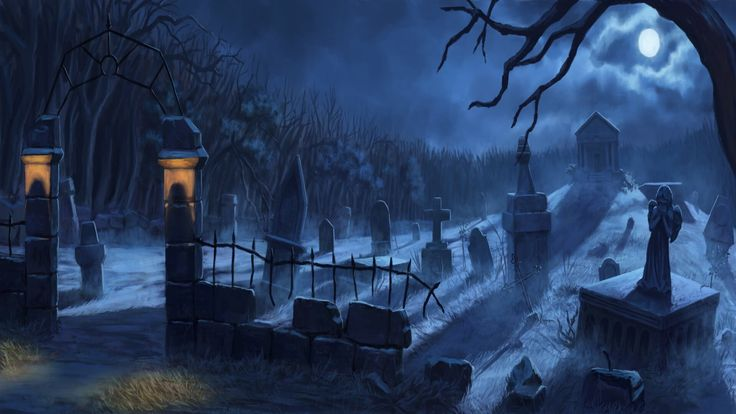
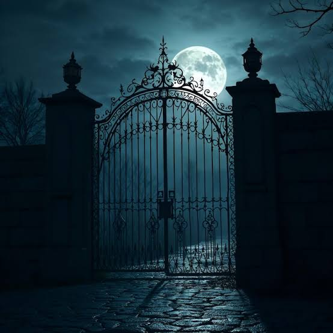

Lendas ao redor do mundo
Histórias sobre seres que se alimentam do sangue ou da energia dos vivos aparecem em diversas culturas. Nem todos são iguais ao vampiro moderno: alguns são espíritos, monstros ou símbolos de medos coletivos.
Um mundo entre a vida e a eternidade
Entre castelos cobertos pela neblina, florestas silenciosas e histórias que atravessam séculos, descubra por que os vampiros continuam despertando tanta curiosidade.
ENTRAR NESSE UNIVERSO01 · DE ONDE VIERAM?
A figura do vampiro surgiu de crenças antigas sobre a morte, o desconhecido e seres que voltariam para perturbar os vivos.
Em diferentes épocas, relatos de doenças, corpos em decomposição e costumes funerários ajudaram a alimentar essas histórias. Não existe uma única origem para todas as lendas: cada povo criou suas próprias versões e maneiras de explicar essas criaturas.

Entre a história e a superstição, o medo ganhou muitas formas.
Histórias sobre seres que se alimentam do sangue ou da energia dos vivos aparecem em diversas culturas. Nem todos são iguais ao vampiro moderno: alguns são espíritos, monstros ou símbolos de medos coletivos.
Livros, filmes e séries transformaram o vampiro em uma figura complexa: perigosa, sedutora, solitária e, às vezes, capaz de amar. Cada obra cria suas próprias regras.
A literatura gótica e o cinema ajudaram a popularizar a imagem do vampiro elegante, imortal e noturno que conhecemos hoje.
02 · ONDE AS LENDAS VIVEM
Castelos isolados, cemitérios antigos e florestas cobertas por neblina formam o cenário perfeito para histórias sobrenaturais.

.jpeg)
.jpeg)
.jpeg)
Moradas isoladas combinam com o imaginário de criaturas que atravessam os séculos.
03 · A MARCA MAIS CONHECIDA
As presas são um dos símbolos mais reconhecidos dos vampiros. Elas representam o perigo por trás de uma aparência que muitas vezes parece humana.
Em filmes e séries, o tamanho e a forma das presas mudam conforme as regras daquele universo. Algumas histórias mostram as presas apenas na hora do ataque.

04 · HABILIDADES SOBRENATURAIS
Clique nas cartas para descobrir.
05 · O VAMPIRO CLÁSSICO
Publicado em 1897, o romance Drácula, de Bram Stoker, se tornou uma das obras mais influentes da literatura de vampiros.
O personagem ajudou a consolidar elementos que aparecem até hoje em livros, filmes e séries: o castelo, a noite, o mistério e a ameaça escondida sob uma aparência sofisticada.
Apesar de o livro ser ficção, sua popularidade fez com que Drácula se tornasse uma referência central quando falamos de vampiros.

06 · THE VAMPIRE DIARIES
Em The Vampire Diaries, vampiros e outras criaturas sobrenaturais convivem com os humanos em uma cidade cheia de segredos. Estas são algumas figuras importantes desse universo.

Sarcástico e perigoso, esconde sentimentos profundos por trás de uma postura provocadora.

Tenta controlar seus impulsos e preservar sua humanidade, mesmo quando o passado retorna.

Inteligente e manipuladora, quase sempre tem um plano e raramente revela suas intenções.

Descobre que a cidade onde vive guarda segredos sobrenaturais que mudam sua vida.

Um dos vampiros originais, poderoso e imprevisível, movido pelo controle e pelos laços familiares.

Uma bruxa essencial para seus amigos, que usa seus poderes para enfrentar ameaças sobrenaturais.

Uma sereia sobrenatural que manipula mentes e memórias e se torna uma ameaça imprevisível.

Descobre a maldição da família e precisa aprender a lidar com sua natureza de lobisomem.

Uma lobisomem determinada, que busca respostas sobre sua origem e protege sua família.
As fotos dos personagens dependem de links externos. Se algum arquivo mudar, o nome aparecerá no lugar da imagem.
07 · NEM TUDO É PODER
Clique em cada item para descobrir como aparece nas lendas e na ficção.
08 · ESCOLHA SEU DESTINO
Em Mystic Falls, confiar na pessoa errada pode mudar tudo.
09 · ACESSO RESTRITO
Algumas informações não aparecem à primeira vista.
Comportamento: são retratados como criaturas noturnas capazes de se misturar à sociedade humana.
Alimentação: o sangue é central na maioria das narrativas.
Regra principal: cada lenda, livro ou série estabelece suas próprias características.
10 · TESTE SUA SOBREVIVÊNCIA
Responda às três perguntas e descubra sua chance de sobreviver a uma noite na cidade.
11 · ENTRE A LENDA E A REALIDADE
Por séculos, os vampiros despertaram curiosidade e medo em diferentes partes do mundo. Suas histórias atravessaram gerações e continuam presentes no imaginário das pessoas. Mesmo com todos os avanços da ciência, a ideia dessas criaturas ainda desperta perguntas: de onde surgiram tantos relatos? Por que histórias semelhantes apareceram em lugares tão distantes? Embora não existam provas científicas da existência de vampiros sobrenaturais como os das lendas, o mistério em torno dessas criaturas continua fascinando a humanidade.

Muitas crenças sobre vampiros surgiram em épocas em que as pessoas não conseguiam explicar doenças, mortes inesperadas e acontecimentos incomuns. Sem os conhecimentos científicos atuais, algumas comunidades acreditavam que os mortos poderiam retornar para ameaçar os vivos. Esses medos deram origem a costumes, histórias e explicações sobrenaturais que foram transmitidos de geração em geração. Com o tempo, os relatos ganharam novos detalhes e ajudaram a construir a imagem dos vampiros que conhecemos atualmente.
Mesmo sem evidências de sua existência, os vampiros continuam conquistando espaço em livros, filmes e séries. Parte desse fascínio está no mistério que envolve essas criaturas: a imortalidade, os poderes sobrenaturais e a relação entre a vida humana e o desconhecido. Ao longo dos anos, cada história apresentou uma nova maneira de imaginar esses seres, fazendo com que continuassem despertando a curiosidade de diferentes gerações. Talvez seja justamente a mistura entre medo, mistério e imaginação que mantenha os vampiros tão presentes até hoje. Afinal, algumas lendas nunca deixam de despertar perguntas.
ÚLTIMA PÁGINA
Os vampiros continuam fascinando porque misturam medo, mistério e a pergunta que acompanha a humanidade há séculos: como seria viver para sempre?